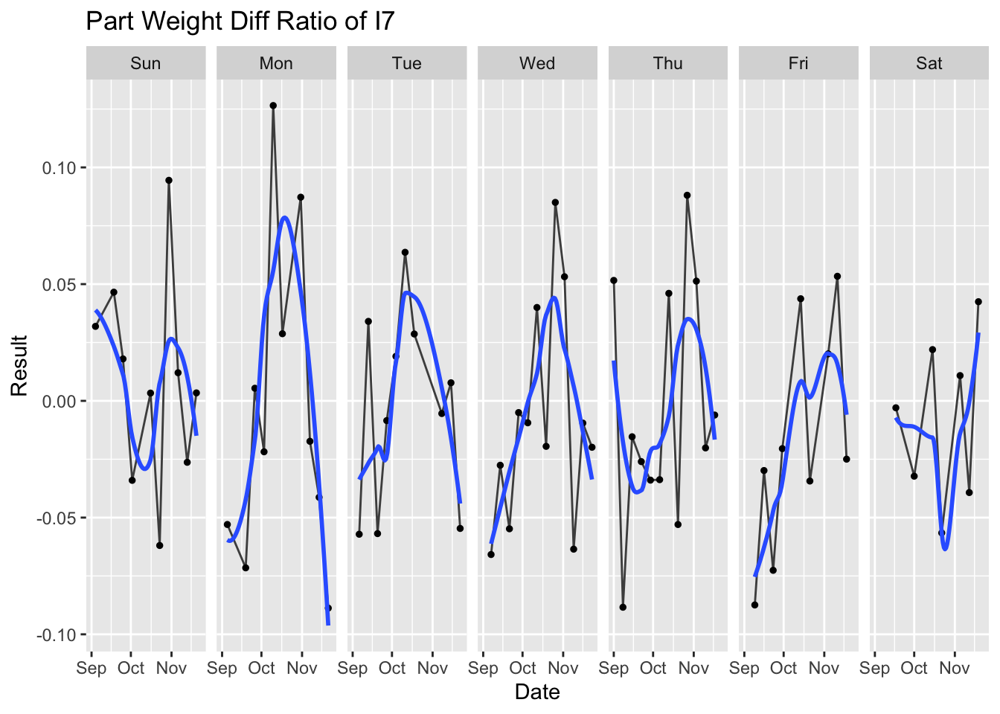
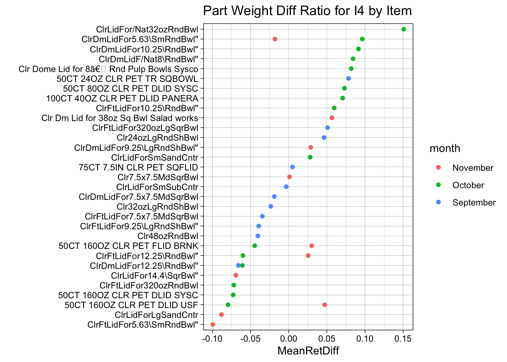

Chapter 4 Results
4.1 Bar Chart for All Machines to identify the top 2 machines with the most defect items

Since there are thirteen machines in the factory, we are interested in checking if there is distribution difference of Exception data among them. Meaning that if there are some machines that have apparently more exceptions than the others. From the histograms above, we found that machine I4 and machine I7 are the two machines that have the most Exception frequency for both Variables and Attributes characteristics. So we will further study those machines in depth later. It also gives us a rough idea that there might be correlation between Variable and Attribute exception performances, which means if a machine has more Variable exception, it could have more Attribute exception potentially. We will study that later as well.
4.2 Group bar chart to identify the top attribute and varibales Among all machines

In a general review of Attribute and Variable data by machine, we found that Visual Evaluation and Form are the major Attribute exceptions for most of the machines except for I1. They take up at least 60% of the Attributes exceptions. This is a good information for the company to assign attention and resources based on the category of defects. For example, in order to address the Visual Evaluation exceptions, it may be good to focus on the quality of raw materials used in production.
Part Weight is the most significant Variable exception for all machines, with Silicone Ratio being the secondary. In the following sections, we will put Part Weight and Silicone Ratio as key focuses to study.
4.3 Parallel coordinate plot:

Remember we found the in the beginning that Variable and Attribute Exceptions may have correlations between each other. So we picked the top two Variable and Attribute Characteristics to plot the Parallel Coordinate Plot based on the incident count of each of them by machine.
We found that Part Weight have positive correlation with Visual Evaluation.
Visual Evaluation have positive correlation with Form.
Silicone do not have strong relationship with other characteristics.
This tells us that there are strong correlation between the top two Attribute Exceptions themselves. And Part Weight, the most significant Variable Exception, has strong correlation with the top Attribute Exception - Visual Evaluation. So it validates our assumption.
That means, if there is a unstable process in any machine, it is likely that it will affect multiple characteristics of the item in a negative way. So a red flag should be raised during Quality inspections that if one of the above characteristics is in exception, the others should be carefully checked as well.
4.4 Multiple boxplots of Part Weight Result according to WorkcenterDesc Type
From the Box plots of the part weight data by machine above, we found that there are some machines that run a wider range of part weights. For example, machine I5 and I8. That means the items run on those machines can be varied from small to large sizes. In the opposite, some machines like I9 and I2 run smaller scale of items which have closer weights.
This plot also tells us it is important to study the Part weight difference ratio from target, which eliminates the impact of the original small or large part weight of the items themselves. And focus on the difference of the part weight with their target to study the level of out-of-range.
4.5 Ridgeline plot for part weight exception for each line: use weight difference = (result - target)/target.
In order to study the difference ratio of Part Weight from Target, we define it by the equation (Result - Target)/Target, and plot that result using the ridge line plot by machine. The Plot above tells us I9 has more out of range Part Weight on the upper side, meaning that they run more over weight. Which is not cost effective to the company. And machine I6, I5, I13, I1 tend to run out of range on the lower bound. So it is important to pay attention to those lines that the quality of products are not compromised because of the low weight.
4.6 Pick machine I4 and I7 to study because they have most exceptions.
Next, after we study the different patterns on all machines, we would like to take the two machines that we picked in the beginning, I4 and I7, to deep dive into them and find out more valuable information.
4.6.1 Heatmap
There are three different types of inspection, which are inspections conducted by different group of people. We would like to use heatmaps to find out relationship of inspections conducted by different people. The first two graphs represents that relationship of two machines I7 and I4. As shown in the heat map, the part weight collected by different group of people for the same item do not show exact same pattern. They are somewhat similar on color, however, not all items are perfectly the same. Our recommendation for this is to control and align the data collection methods used by different groups of people, in order to make sure data collected are accurate and reflect consistence.
The third and fourth graphs are to examine the relationship among Variable Exceptions for I7 and I4, where we do not find very similar patterns among those different Variable characteristics.
4.6.2 Scatter Plot
In order to further study if there is relationship between Part Weight and Silicone Ratio for I4 and I7, we used scatter plots. On I4 there is a weak positive correlation between, however I7 has no strong relationship. This shows that part weight and silicone ratio are not correlated to each other, though they are the top two Variable exceptions.
4.6.3 Time series plot of attribute exception throughout the 3 months. For I4 and I7 repectively. (overall + by weekday trend)
Next we would like to study if time has any impact on product performance. So we use time series plot to explore if pattern exists. For machine I4, the first graph is an overview of three month time series. We mark out the weekends with red dot. To see if the more fluctuation exist on weekends comparing to weekdays. The first plot does show the red dots fall on high or low peaks, which validate our assumption. The second graph group the data by days in week and we observe on Saturday, there are more extreme values and wider range. This shows us on machine I4, due to people resource limitation on weekends, the weight exception is more extreme than other days. We recommend the Quality department to pay higher attention on weekends on product and process stability, to avoid quality defects.

We used the same idea to study weekend performance for machine I7, it does not show the same conclusion as machine I4. So that means the people factor is less affected by the day in week on I7.
4.6.4 Cleveland dot plot with multiple dots

To further dive into to the Part Weight performance for I4, we used Cleveland dot plot to draw the rank of each item run on this machine by Part Weight difference ratio. Based on this graph, we recommend red flagging the top 7 items and low 6 items in the graph on part weight control in order to achieve better part weight performance for the machine overall.
Use the same logic as above and based on this graph, we recommend red flagging the top 8 items and low 7 items in the graph on part weight control in order to achieve better part weight performance for machine I7 overall.
Also in the above two graphs, we see that for items that show up in more than two months, the weight of them tend to increase by time, which shows it could potentially be affected by the tool of the item being fatigue and require maintenance over time.